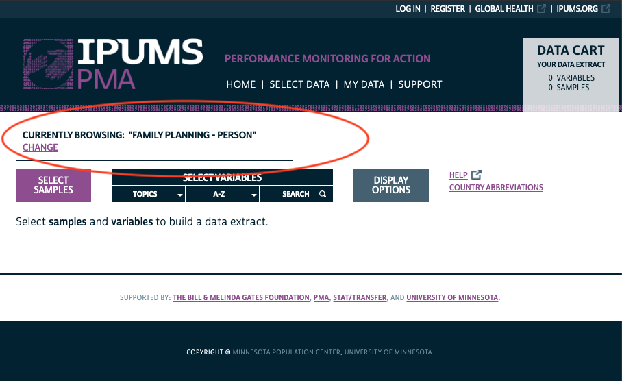
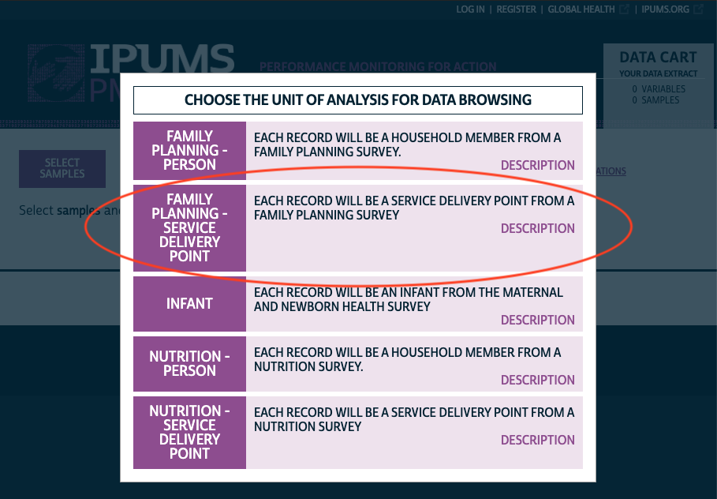
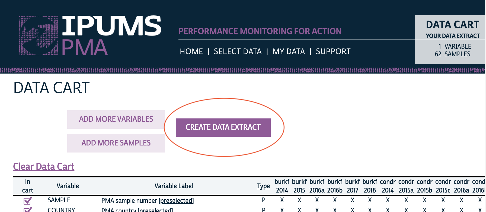
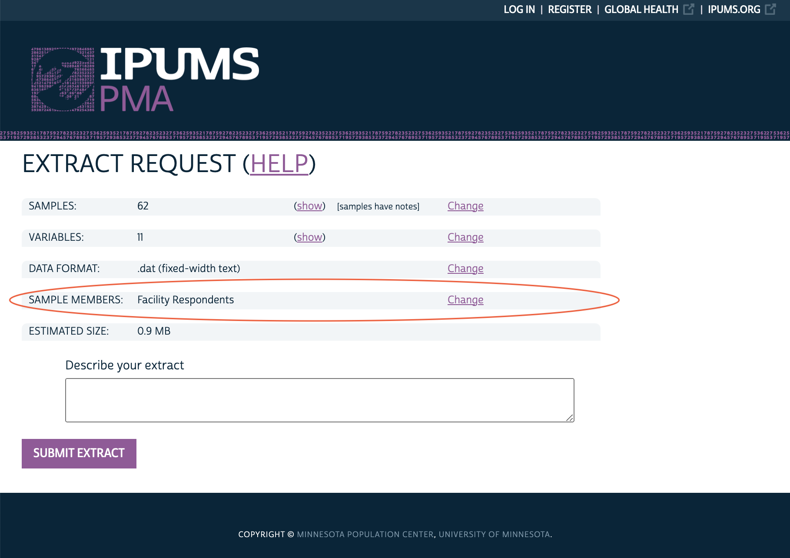
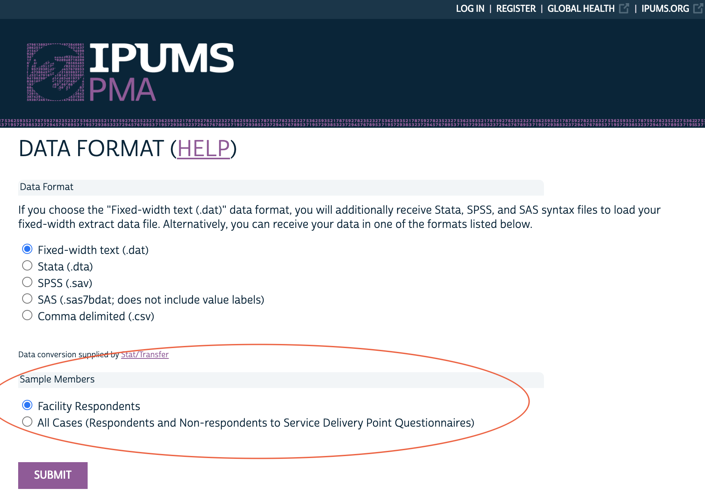

SDP samples are not nationally representative. Learn how to use them to describe the health service environment experienced by individuals.
When you visit pma.ipums.org and begin browsing data, you’ll notice that PMA data are available for several different units of analysis.
You can see which unit of analysis you’re currently browsing - or switch to a different unit of analysis - in this box:

Click CHANGE, and you’ll see the different units of analysis that are available:

This Data Discovery post kicks off a series of posts all about the data available for the Family Planning - Service Delivery Point unit of analysis. As you’ll see, these data are meant to provide important context for the individuals included in the Family Planning - Person series: while SDP data are not nationally representative, they can help provide a rich portrait of the health service environment experienced by women and households.
You’ll find more blog posts about SDP data by following the Individuals in Context series. Look for upcoming posts about:
A Service Delivery Point (SDP) is any type of facility that provides health services to a community: you’ll find a breakdown of the available facility types for each sample listed in FACILITYTYPE. Because countries may include regionally-specific facility types, we’ve integrated major groupings together in the variable FACILITYTYPEGEN. For example, you may find SDP data available from any of these general facility types:
PMA samples SDPs managed by governments, NGOs, faith-based organizations, private sector organizations, and a range of other institutions. You’ll find the managing authority for each SDP listed in AUTHORITY.
While all SDP surveys cover similar topics, individual questions may be posed somewhat differently - or not at all - for any given sample. That’s where IPUMS PMA comes in: we harmonize differences across samples and document the availability of every variable for each sample.
IPUMS PMA also organizes SDP variables by topic. These topics currently include:
Additionally, there are a number of technical variables related to survey administration. For example, every SDP included in the sample frame receives a unique FACILITYID (this ID is preserved across survey rounds if a facility is surveyed more than once). However, some facilities never responded to the questionnaire if, for example, no individual respondent was present, competent, and available to be interviewed (see AVAILABLESQ); if no such person was available - or if such a person declined the interview - the variable CONSENTSQ will indicate that survey consent was never obtained. The variable RESULTSQ indicates whether the questionnaire was fully completed or, if not, it provides the reason.
You may choose whether to include SDPs where RESULTSQ indicates that the questionnaire was not fully completed. Click CREATE DATA EXTRACT from you Data Cart:

Then click CHANGE next to Sample Members:

Finally, choose whether to include only “Facility Respondents” (those who fully completed the questionnaire), or “All Cases” instead:

So what conclusions can you draw from SDP data? First, it’s important to note that the SDP sample design is not nationally representative, and there are no sampling weights for SDP data.1 In other words, it is not possible to get a sense of the national health services profile in a particular country using SDP data.
Instead, facilities were selected for the SDP survey using the same geographic enumeration areas used to select households for each Household and Female survey. To see how this works, let’s look at an example dataset collected from Burkina Faso in 2017, beginning with the set of female respondents to the Household questionnaire (other household members and female non-respondents have been excluded):
library(tidyverse)
bf17_hhf <- ipumsr::read_ipums_micro(
ddi = "data/pma_00011.xml",
data = "data/pma_00011.dat.gz") %>%
filter(YEAR == 2017)
The Dataset Notes for this sample describe a two-stage cluster design with urban-rural strata, producing a sample of women from 83 enumeration areas. If we count the number of unique values from EAID in our data, we see that there are 83 unique identification numbers - one for each enumeration area:
n_distinct(bf17_hhf$EAID)
[1] 83We can also see how these enumeration areas are distributed throughout the 13 administrative regions of Burkina Faso. Note that we have more enumeration areas in the Central region (including the capital, Ouagadougou), and we have fewer enumeration areas in regions where the population is lower (Centre-Sud, Plateau-Central, Sud-Ouest, etc.):
bf17_hhf %>%
group_by(GEOBF) %>%
summarize(.groups = "keep", n_EAID = n_distinct(EAID)) %>%
arrange(n_EAID)
# A tibble: 13 x 2
# Groups: GEOBF [13]
GEOBF n_EAID
<int+lbl> <int>
1 7 [Centre-Sud] 2
2 11 [Plateau-Central] 3
3 13 [Sud-Ouest] 3
4 2 [Cascades] 4
5 12 [Sahel] 4
6 5 [Centre-Nord] 5
7 4 [Centre-Est] 6
8 10 [Nord] 6
9 1 [Boucle du Mouhoun] 7
10 6 [Centre-Ouest] 7
11 8 [Est] 7
12 9 [Hauts-Bassins] 11
13 3 [Centre] 18Although the same number of households are randomly selected from within each enumeration area (typically 35), this concentration of enumeration areas within population-dense regions helps to ensure that the Household and Female data are nationally representative.
Let’s now look at the sample of SDPs collected from Burkina Faso in that same year:
bf17_sdp <- ipumsr::read_ipums_micro(
ddi = "data/pma_00008.xml",
data = "data/pma_00008.dat.gz") %>%
filter(YEAR == 2017)
Dataset Notes for the SDP sample explain that the same 83 enumeration areas used in the Household and Female Sample were used to select facilities for the SDP sample. Moreover, we can confirm that all of enumeration areas in the SDP data also appear in the HHF data:
all(bf17_sdp$EAID %in% bf17_hhf$EAID)
[1] TRUEBut is the reverse true? Is every enumeration area from the Household and Female Sample represented in the SDP data?
all(bf17_hhf$EAID %in% bf17_sdp$EAID)
[1] FALSEPerhaps surprisingly, the answer is no. To learn why, we have to dig a bit deeper into the SDP Dataset Notes. There, we see that a facility located within the physical boundaries of one of the 83 enumeration areas from the Household and Female Survey would have been included in the SDP sample. However, there may be enumeration areas - particularly in remote areas - where no facilities are located.
Fortunately, PMA also includes data about the service catchment area for some facilities.2 You can include this information by selecting the variable series EASERVED. If a given facility serves more than one enumeration area, EASERVED1 will contain the enumeration area ID code for the first enumeration area on its catchment list, EASERVED2 will contain the ID code for the second one, and so forth. If that same facility serves 5 enumeration areas, the variables EASERVED6, EASERVED7, and so forth would be “NIU (not in universe)”.
What does this mean? As we’ll show in an upcoming post in this series, it’s possible to create a portrait of the health service environment provided to individuals sampled in the Household and Female surveys. This portrait extends beyond the list of facilities located in an individual’s geographic enumeration area, but users should take care to understand that the scope of facilities providing services to that enumeration area is somewhat limited by sample design.
The files do contain a weight variable for the sampling units EAWEIGHT, which is a probability weight representing the likelihood of an enumeration area being selected for sampling. The collectors of the original data do not recommend using EAWEIGHT to weight SDP variables.↩︎
This information is only available for SDPs where the managing authority listed in AUTHORITY is “government”.↩︎